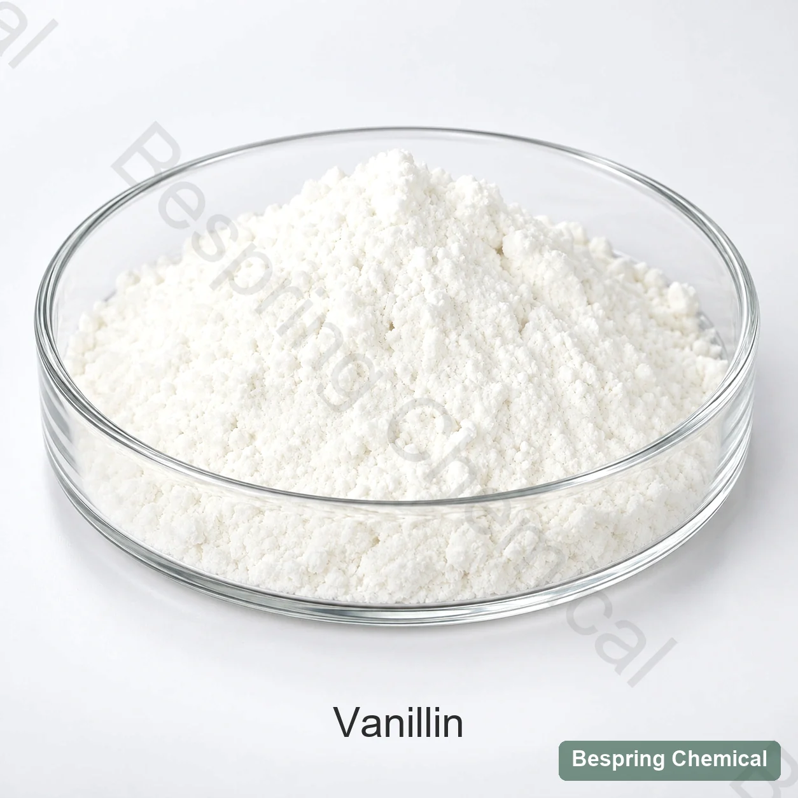
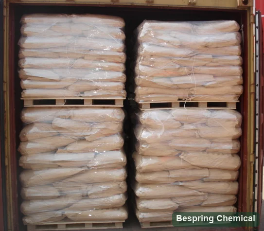

Vanillin
CAS 121-33-5. Phê duyệt danh tính, quy trình sản xuất, độ tinh khiết và đặc trưng cảm quan cho công thức và cách ghi nhãn dự kiến.
Chất đặc trưng của Vanilla · JECFA 889 / FEMA 3107

Ảnh sản xuất # xác nhận cấp và bao bì khi đặt thứ tự
Để báo giá so sánh được, nêu tiêu chuẩn thực phẩm, ứng dụng, lượng, đóng gói, điểm đến. Tiêu chuẩn riêng nguồn và điều kiện thương mại được xác nhận theo cấp chào.
Kiểm tra IDVanillin ethyl vanillin
Nguồn tài liệuXác nhận lộ trình sản xuất
So sánh bộ nhạyDùng bảng xếp hạng được chấp thuận
Đánh giá tiến trìnhGiải quyết và phơi nắng nhiệt
Định nghĩa phân tử, hồ sơ thương mại biến
Vanilin, còn gọi là vanillaldehyde hoặc vanillic aldehyde, là 4-hydroxy-3-methoxybenzaldehyde (CAS 121-33-5), có công thức C8H8O3 và khối lượng 152.15 g/mol. Ghi chép JECFA vanillin Mô tả những cây kim màu trắng hoặc ít vàng hoặc bột pha lê, hơi hòa tan trong nước và có thể hòa tan trong rượu.
Trang này liên quan đến chất dinh dưỡng được định nghĩa, thay vì chiết xuất vac-ni hay là một loại hương vị mang tính vật liệu tổng hợp dựa trên thực thể. JECFA 889 và FEMA 3107 là những con số tham khảo có hương vị, chứ không phải là một bản sắc hóa chất bổ sung thực phẩm. chỉ riêng tính hóa học không thiết lập sự tinh khiết cấp thức ăn, một yêu cầu hay hiệu suất tự nhiên trong công thức của bạn. so sánh tài liệu, kết quả phân tích và mẫu cảm giác cho điểm chính xác.
Ngăn chặn sự thay thế và lỗi nhãn
CAS 121-33-5. Phê duyệt danh tính, quy trình sản xuất, độ tinh khiết và đặc trưng cảm quan cho công thức và cách ghi nhãn dự kiến.
Một chất hương liệu riêng với CAS, công thức và đặc trưng cường độ khác. Đây không phải cấp mạnh hơn của cùng một chất.
Một sự chuẩn bị đa năng từ chất va-ni, từ thành phần đặc biệt, tiêu chuẩn và quy tắc đánh dấu.
Tên hóa học không chứng minh nguồn gốc tự nhiên. Lấy thông tin quy trình, nguyên liệu đầu vào, truy xuất và rà soát công bố theo thị trường đích.
Một COA không thể thay thế mùi vị và vị giác
So sánh đặc tính vani ngọt/béo và mọi nốt khói, phenol, dược liệu, gỗ hoặc nốt hương khác với mẫu chuẩn đã phê duyệt. Đặt tiêu chí chấp nhận phù hợp với cấp sản phẩm thay vì coi mọi khác biệt có thể phát hiện là khuyết điểm.
Giải quyết vấn đề, tập trung, nhiệt độ, thời gian tự lập, tàu và mã hóa mù nên có thể so sánh nguồn gốc.
Chạy nhiều cấp độ trong thực tế. ngưỡng theo dõi, cân bằng, sau vị và tương tác với ca cao, mỡ bơ, ngọt hơn, muối và các hương vị khác.
Theo dõi sự chú ý, màu sắc, tương tác gói và phát triển ngoài chú thích sau nhiệt độ thực tế, oxy, ánh sáng và phơi nhiễm.
Cố tình xử lý hương vị
Đánh giá sự cân bằng vani–ca cao, sự phân bố và khả năng lưu giữ hương qua quá trình nghiền tinh hoặc đảo trộn conching. Đánh giá độ ngọt và đắng cảm nhận trong công thức thành phẩm; vanillin là chất tạo hương, không phải chất thay thế đường. Xem xét Chọn thành phần sô cô la và Khác nhau về bột ca cao khi khớp với căn cứ.
So sánh sự phân phối bột nhào, mất bánh, mùi thơm/ miếng vụn, sự tương tác màu sắc và cuộc sống đóng gói kệ - không chỉ riêng mùi bột thô.
Kiểm tra phân chia chất béo và chất béo, làm mẫu, lão hóa, tràn ngập, mùi vị nhiệt đới lạnh và sau khi nếm xong.
Vì lượng nước trong quá ít, kiểm tra sự tập trung, tiền chuẩn hoặc cho phép mang, độ trong suốt/sự tái cấu trúc. Namekhông phải mọi loại thức ăn đều được khuyến khích.
Kế hoạch thử nghiệm: Ở đây hãy chọn mức độ thử nghiệm cho thực phẩm mục tiêu, quá trình và điều kiện phục vụ, sau đó đánh giá hương vị hoàn thiện chống lại sự kiểm soát. 21 CFR 182.60 Danh sách vanillin để sử dụng hương vị đã định; 21 CFR 101.22 quy định thuật ngữ và ghi nhãn hương liệu. Cả hai nguồn không chứng nhận một lô Bespring hay xác lập công thức phối chế.
Đặc điểm tham khảo và tiêu chuẩn mua sắm
Các giá trị dưới đây đến từ hồ sơ hương vị JECFA (xem xét tổng quát được hiển thị: 2019), không phải giới hạn thương mại cho kết quả của Bespring. Yêu cầu đặc điểm hiện thời/ TDS cho điểm được đề nghị, phương pháp đồng ý và tiêu chuẩn chấp nhận, và xem lại các hàng loạt đã giao cho COA chống lại đặc điểm đặc trưng đó.
Trên màn hình nhỏ, hãy cuộn theo chiều ngang để đọc cả ba cột.
Vuốt hoặc dùng bàn phím để đọc tất cả các cột
| Tìm kiếm | Giới thiệu JECFA | Quản lý người mua |
|---|---|---|
| Nhận diện | Nhận diện IR; CAS 121-33-5 | Khớp quang phổ/method hiện tại và mã nguồn đã tuyên bố |
| Nhà phát triển văn bản | Tối thiểu 97% | Phương pháp, cơ bản, chụp X-quang và kết quả mẻ |
| Điểm Chảy | 81–84°C | Phương pháp và phạm vi; điều tra trầm cảm hoặc mở rộng |
| Diện mạo/ khứu giác | Chất pha lê trắng hay vàng nhạt; mùi thơm ngọt, nhiều mùi van | Màu thuộc số khi cần cộng với tiêu chuẩn cảm giác được duy trì |
| Độ phân giải | Nước chảy nhẹ, dễ hòa tan với chất béo | Kiểm tra lại mẫu và tiến trình bổ sung |
| Đường dẫn nguồn | Không được xác định bởi phân tử | Chất dinh dưỡng, quá trình sản xuất, khả năng theo dõi và tuyên bố tuyên bố tuyên bố |
| Điều khiển thương mại | Không phải lĩnh vực nhận dạng JECFA | Moisture, tàn dư, tạp chất, hồ sơ hạt nhân, vi sinh học là liên quan, gói gọn và kệ cuộc sống |
Bản ghi chép JECFA ghi nhận một giả thuyết tối thiểu là 97%; đây là một yêu cầu tham khảo, không phải tính chất tinh khiết của một lô đất được cung cấp. Xác nhận nếu giả thuyết thương mại là áp dụng hoặc phơi khô, và yêu cầu phương pháp đã ghi rõ. Moisture, mất dần trong việc khởi động và lưu trữ khác nhau.
Một thông tin cụ thể xác định giới hạn chấp nhận; một kết quả ghi chép COA cho một hàng được xác định. Yêu cầu kết quả từ nguồn TDS, SDS, đại diện COA, đại diện sản xuất, khai báo sản xuất/rigin và dị ứng có liên quan, GO hay chứng nhận chứng nhận. Kiểm tra bất cứ chứng nhận nào chống lại điểm chính xác, nguồn, trang và thời gian xác định. Tính khả thi được xác nhận trong khả năng xác thực.
Danh tính của công chúng, giả thuyết, điểm tan chảy, hình dạng thể và sự linh hoạt; không phải bằng chứng về một mẻ đá được cung cấp.
Xem lại JECFA 889Nhân dạng CAS, hiệu ứng kỹ thuật có hương vị và các tham khảo chính sách liên quan.
Xem lại hồ sơ của cơ sở dữ liệuĐịnh nghĩa và điều kiện cho thuật ngữ có hương vị tự nhiên và nguồn tham khảo.
Xem lại quy tắc 1334/2008Chấp thuận từ nguồn sang trái
Xác nhận vanillin - không phải ethyl vanillin- thêm nguyên liệu, quá trình, nguồn gốc và xác nhận có chủ đích.
So sánh IR/assay, chất khử sắc thể, lớp băng tan, màu sắc, độ ẩm và chất ô nhiễm.
Sử dụng sự phân giải và hiệu quả tiêu chuẩn và ứng dụng để so sánh với một điểm tập kết.
Khóa tàu, phân hủy, thứ tự bổ sung, nhiệt độ, giữ thời gian và kiểm soát sự mất mát mùi hương.
Kiểm tra oxy hóa, ánh sáng, nhiệt độ, mùi hương chuyển hóa, màu sắc và hương vị thông qua kệ đã định sẵn.
Kết nối COA, giữ cảm giác, lấy mẫu, đóng gói, theo dõi và thay đổi thông báo.
Tài liệu tham khảo lịch sử

Hỏi người mua
Không. Vanillin là một phân tử được xác định cụ thể. Chiết xuất vani là chế phẩm nhiều thành phần từ nguyên liệu vani, có yêu cầu riêng về thành phần và ghi nhãn. Kết quả định lượng vanillin không thể xác lập danh tính của chiết xuất.
Không. Chúng có danh tính hóa học và hương liệu khác nhau. Ethyl vanillin không phải cấp vanillin có độ tinh khiết cao hơn. Đánh giá mọi sự thay thế trong công thức thực tế thay vì dùng tỷ lệ cường độ hương chung hoặc thay thế cùng khối lượng.
Không, CAS xác định được phân tử, không phải vật nuôi hay quá trình sản xuất. yêu cầu đường dẫn và bằng chứng xác định theo định định vị trí của nó sau đó đánh giá xác nhận được định được định trước dưới các quy tắc thị trường đích đến.
Không. Mức độ tối thiểu 97% là một tham khảo riêng của JECFA. Điểm được đề nghị đòi hỏi một đặc điểm hiện tại với phương pháp lý thuyết của nó và báo cáo cơ bản; các mẻ COA phải xác định số lượng và kết quả thực tế.
Hãy chọn phương pháp truyền tải, tiền liệt hoặc bổ sung trực tiếp cho nồng độ và ma trận thực phẩm: thử nghiệm sự phân giải, phân phối đồng nhất, phơi nắng và mùi thơm hoàn tất; sự thiếu vệ sinh nước không có nghĩa là sự phân hủy ngay lập tức ở mọi mức độ tập trung.
Cho biết ứng dụng thực phẩm, cần thiết tiêu chuẩn, sản xuất hoặc yêu cầu đòi hỏi, giới hạn và phương pháp chủ chốt, định vị giác quan, số lượng, bao bì, quốc gia đích hay cảng, Incoctern, thời gian phát và yêu cầu tài liệu.
Xem xét dưới đây: 2026-10-04 · danh tính chính thức và các tài liệu tham khảo có liên quan ở trên.
Tiện ích nhận diện và cảm giác
Hãy chia sẻ ứng dụng của bạn, cần thiết phải phân tích và phân tích thực phẩm hoặc tiêu chuẩn chuẩn về hương vị, đồng đội chúng tôi có thể xem xét lại cách sử dụng, tài liệu sẵn có và yêu cầu thương mại cho điểm được đề nghị.
Cho chúng tôi biết điểm số và điểm đến của anh để chúng tôi có thể xác nhận tài liệu nào có sẵn cho đơn đặt hàng của anh.
Một tham chiếu bên ngoài không phải là một chứng nhận hàng loạt hoặc một đặc điểm sản phẩm Bespring.